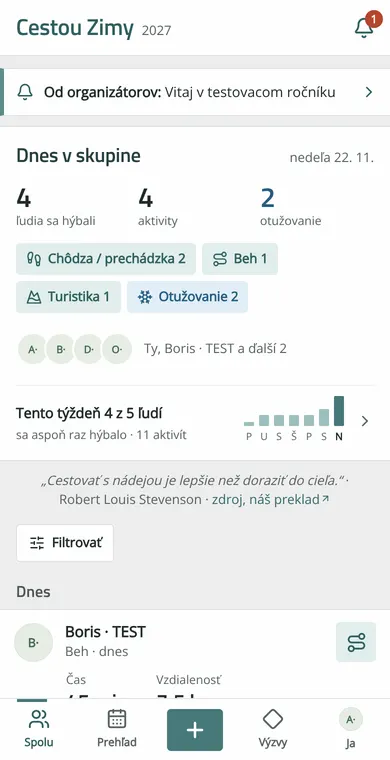
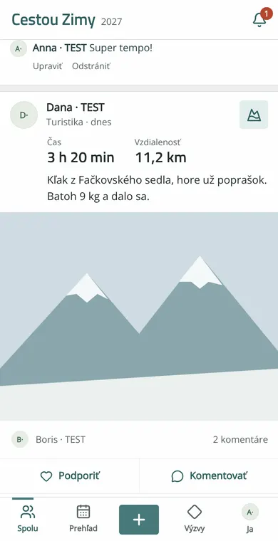
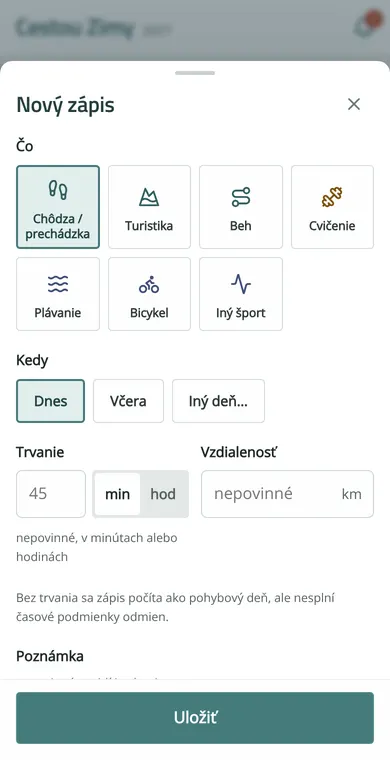
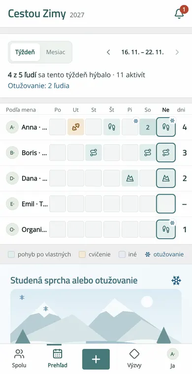
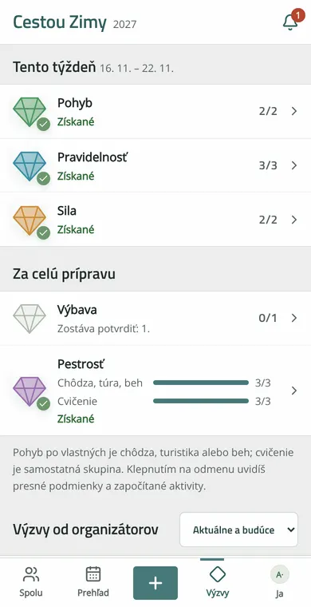
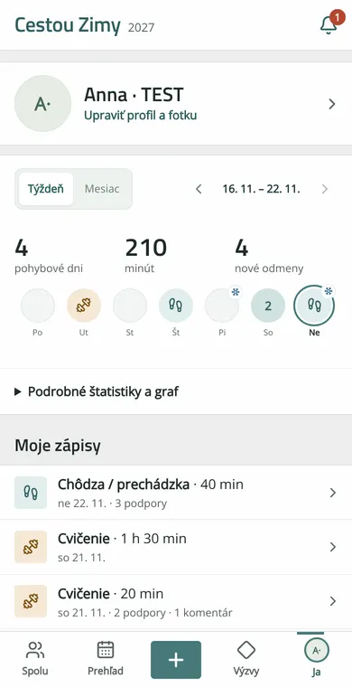
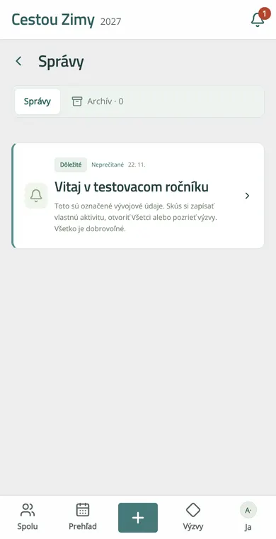

Príprava na zimný kurz
Cestou Zimy
Krátky návod pre účastníkov

Dole v appke je päť tlačidiel: Spolu (čo robí skupina), Prehľad (týždeň po účastníkoch), + (nový zápis), Výzvy a Ja (tvoja príprava a nastavenia).
Prvý príchod: otvor odkaz od organizátora a vyber Prihlásiť sa, prípadne Vytvoriť účet. Bez platnej pozvánky nový účet čaká na schválenie; potom použi Skontrolovať schválenie. Ak už účet máš, prihlás sa doň.
-
Spolu: čo robí skupina
Po otvorení appky vidíš Spolu. Karta Dnes v skupine ukáže, koľko účastníkov sa dnes hýbalo, aké aktivity pribudli a kto ich zapísal. Pod ňou sú aktivity všetkých, zoradené po dňoch. Cez Filtrovať vyberieš účastníka, typ alebo obdobie.

-
Podpor a komentuj
Pod aktivitou stlač Podporiť alebo Komentovať. Vidíš, kto už podporil, a posledné dva komentáre; ostatné otvoríš cez počet komentárov. Fotografiu zväčšíš klepnutím, prípravu účastníka otvoríš klepnutím na jeho meno.

-
Zapíš aktivitu tlačidlom +
Stredné tlačidlo + otvorí Nový zápis. Vyber typ, deň (Dnes, Včera alebo Iný deň) a trvanie: nový zápis má predvolených 30 min, zmeň ho podľa skutočnosti, napríklad 90 min alebo 1,5 hod. Prepínač min / hod mení len jednotku, napísané číslo ostane. Pridať môžeš vzdialenosť, poznámku a najviac päť fotografií. Stlač Uložiť.
Svoj zápis upravíš alebo zmažeš cez tri bodky na jeho karte. Fotky: JPEG, PNG alebo WebP, do 10 MB. Bez trvania sa započíta pohybový deň, časové podmienky odmien potrebujú trvanie.

-
Prehľad skupiny
V Prehľade je jeden riadok na účastníka a 7 políčok týždňa, zoradené podľa prezývky. Hore prepneš Týždeň / Mesiac, appka si voľbu zapamätá. Týždne posúvaš prstom doľava a doprava cez celú prípravu. Klepnutím na políčko otvoríš daný deň, na meno celú prípravu účastníka; klepnutím na jeho fotku ju zväčšíš.
Rohy políčka: vločka = otužovanie, fotoaparát = fotka, bublina = komentár, červené srdiečko = tvoja podpora. Zimná krajina so zapojením skupiny je nižšie v Prehľade.

-
Výzvy a odmeny
Vo Výzvach vidíš drahokamy tohto týždňa a celej prípravy aj to, čo ešte chýba. Klepnutím na odmenu uvidíš presné pravidlá a započítané aktivity. Nižšie sú výzvy organizátorov a Moja zbierka.
„Pohyb po vlastných“ je chôdza, turistika alebo beh; cvičenie je samostatná skupina.

-
Pridaj vločku
Keď organizátor sprístupní otužovanie, v okne Nový zápis pribudne riadok Otužovanie s tlačidlom + vločka. Vyber deň a Studená sprcha / Otužovanie, potom Pridať vločku. Jeden účastník pridá jednu vločku denne; otužovanie nepridáva tréningové minúty.
Staršie vločky upravíš v Prehľade cez Moje vločky.
-
Ja: tvoja príprava a nastavenia
Hore v Ja je Appka na ploche (tlačidlo Nainštalovať) a Upozornenia (tlačidlo Zapnúť). Upozornenie príde na správu organizátorov a keď niekto podporí alebo okomentuje tvoju aktivitu. Ďalej je tvoj týždeň alebo mesiac, štatistiky, tvoje zápisy, profil, heslo, návod a odhlásenie.
Android: ponuka prehliadača → Nainštalovať aplikáciu / Pridať na plochu. iPhone: Safari → Zdieľať → Pridať na plochu; upozornenia zapni po otvorení cez novú ikonu. Názvy položiek sa môžu líšiť.

-
Správy, archív a notifikácie
Zvonček hore otvorí správy organizátorov; dôležitá správa sa ukáže aj ako pruh na začiatku Spolu. Klepnutím na názov zobrazíš celý text. Zvoľ Beriem na vedomie · archivovať; správu nájdeš v Archíve a ostatným sa nič nemení.
Záložka Notifikácie ukáže, kto podporil alebo okomentoval tvoje aktivity, aj bez zapnutých upozornení v telefóne. Klepnutím otvoríš danú aktivitu.
